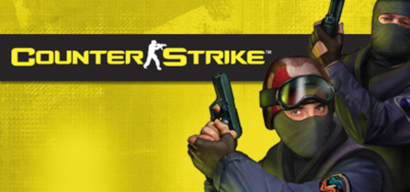

Este vídeo resume a história do CS
Como surgiu?
Counter-Strike (também abreviado por CS) é um popular jogo eletrônico de tiro em primeira pessoa. Inicialmente criado como um "mod" de Half-Life para jogos online, foi desenvolvido por Minh Le e Jess Cliffe e depois adquirido pela Valve Corporation. Foi lançado em 1999, porém em 2000 ele começou a ser comercializado oficialmente, e posteriormente foram feitas versões para Xbox, Mac OS X e Linux. Atualmente o game é jogado na versão Counter-Strike: Global Offensive.
O jogo é baseado em rodadas nas quais equipes de contraterroristas e terroristas combatem-se até a eliminação completa de um dos times, e tem como objetivo principal plantar e desarmar bombas, ou sequestrar e salvar reféns.
Counter-Strike foi um dos responsáveis pela massificação dos jogos por rede no início do século, sendo considerado o grande responsável pela popularização das LAN houses no mundo. O jogo é considerado o originador do esporte eletrônico, onde muitos jogadores levam-no a sério e recebem salários fixos, existindo até times profissionais, e que são patrocinados por grandes empresas como a Intel e a NVIDIA. Pelo mundo existem as ligas profissionais onde o Counter-Strike está presente, como o caso da CPL (que encerrou suas atividades em 2008), ESWC, ESL, WCG e WEG. No caso da ESWC funciona da seguinte forma: cada país tem as suas qualificações no qual qualquer clã pode ir a uma qualificação em uma lan house em qualquer parte do mesmo país, passando depois às melhores equipes, as melhores equipes de cada país encontram-se depois no complexo da ESWC, localizado em Paris, para disputar o lugar da melhor equipe do mundo de Counter-Strike.
Considerado um dos maiores e mais influentes jogos de todos os tempos, Counter-Strike foi aclamado pela mídia especializada desde a época de seu lançamento, recebendo notas 88/100 no site Metacritic e 89/100 no site GameRankings, além de receber 98% de análises positivas no Steam.
Jogabilidade
Princípios básicos
A ação de Counter-Strike se desenvolve em rodadas em uma duração definida pelo criador do server, nas quais a equipe terrorista (ou TR) enfrenta a equipe contraterrorista (ou CT). A equipe vencedora é aquela que atende a todos os seus objetivos de vitória, de situação ou a eliminação de todos os jogadores do outro time. Se não houver nenhuma vitória direta de uma das duas equipes no final da rodada, a equipe que não fizer os seus objetivos perde por eliminação.
Todos os jogadores começam o round com a mesma quantidade de pontos de vida (100) e a quantidade de pontos de armadura que conseguirem conservar durante a rodada anterior, ou caso puder comprar um novo colete. A vida do jogador diminui quando o dano for causado por disparos de seus oponentes ou dos companheiros - se houver fogo amigo (os companheiros causam menos danos, mas eles também podem matar) - ou por uma queda de uma grande altura. Os tiros podem ser acertados em diferentes partes do corpo (braço direito e esquerdo, perna direita e esquerda, tronco e cabeça), e causam dano variável no local afetado, sabendo-se que um tiro na cabeça (ou headshot) é muitas vezes mortal. A perda de pontos de vida só provoca uma pequena redução nos movimentos de contraterroristas ou terroristas que receberam dano. Quando todos os pontos de saúde acabam, o jogador morre.
Diferentemente da maioria dos jogos de ação em primeira pessoa online baseado em deathmatch de equipes, onde os jogadores mortos ressuscitam imediatamente após a morte, no Counter-Strike, ao morrer deve-se esperar o fim da rodada como espectador, retornando no próximo round.
Nos mapas oficiais o jogador basicamente dispõe inicialmente de uma pistola e uma faca. O jogador também pode comprar outras armas e equipamentos úteis como um colete a prova de balas, granadas, kits de desativação de bomba, óculos de visão noturna, etc; tudo dependendo das condições do jogo, durante um período de tempo limitado e nas zonas previstas para esse efeito. No início do jogo, o jogador tem a possibilidade de escolher a sua equipa: terrorista ou contraterrorista, dentro dos limites de vagas disponíveis ou optar por ser um espectador. Se uma equipe tem muitos mais jogadores do que a outra, um sistema de autoequilíbrio troca os jogadores das equipes na próxima rodada, podendo configurar o servidor para isso; independente do time, o jogador começa com 800 $ (soma por padrão). Durante as rodadas o jogador ganha dinheiro se ele matar um inimigo, se atinge o objetivo, se a sua equipe ganha a rodada, se você colocar a bomba e ela explode, se você liberar um refém ou se pedir para segui-lo. Um jogador também pode perder dinheiro se ele mata um de seus companheiros ou um refém. Em qualquer caso, no início do round o jogador sempre ganha de dinheiro, exceto no caso de empate. A quantia máxima de dinheiro é de $ 16.000.
A finalidade de algumas partidas consiste no resultado individual do jogador. Cada um tem seu número de frags e de mortes contabilizados. Os frags do Counter-Strike são um pouco diferentes de outros jogos de tiro em primeira pessoa; eles aumentam no jogo matando os adversários e completando os objetivos. Assim, por exemplo, um inimigo abatido dá frag, uma explosão ou desativação de bomba dá três frags. O suicídio, o assassinato de um companheiro e a mudança de equipes são penalizados com um ponto a menos. O número de mortes, por sua vez, corresponde às vezes que o jogador morreu, que não afetam o número de frags.
Controles e interface
Counter-Strike é um jogo de ação em primeira pessoa que é jogado com o teclado e o mouse. O teclado é usado para a maioria das ações - os movimentos (frente, para trás, vire à esquerda, vire à direita, saltar, agachar), gestão de equipamentos (trocar armas, atirar, recarregar, acender a lanterna) e comunicação (escrita ou oral). O mouse serve para mover o ponto de vista do jogador e da arma usando uma mira imóvel que está no centro da tela; também serve para atirar o inimigo com um único clique no botão esquerdo. O jogador também pode ativar a função secundária da arma com o botão direito do mouse, como o zoom para o rifle sniper, silenciador para a carabina Maverick M4A1 e a pistola USP, ou dar um golpe com a faca. A maioria dos mouses também são equipados com uma botão do meio que serve para mudar de arma girando-o, ficando a cargo do jogador fazer alterações para personalizar.
A interface consiste em diferentes elementos que estão distribuídos sobre os cantos da tela. No canto superior esquerdo é o radar que mostra a vista do mapa, bem como os jogadores da equipe. No Counter-Strike: Source também mostra a posição dos adversários que estão no campo de visão dos membros da equipe, além da posição da bomba. Ademais, no canto superior direito há uma lanterna que ilumina o caminho quando ativado. Na parte inferior da tela o jogador pode ver sua vida, sua armadura, o resto de sua munição, dinheiro e um relógio mostrando o tempo restante antes do final da rodada.
Outros itens aparecem apenas quando o jogador pressiona um botão, como o submenu para mudar de armas, um menu para selecionar armas e equipamentos (que pode ser desativado) são destacadas na parte superior da tela e mostra as diferentes partes de seu arsenal e pode-se mudar de um para o outro visualmente. As armas podem ser alteradas em sequência usando a roda do mouse na seguinte ordem: arma principal, arma secundária, faca, granadas e bombas. Quando o jogador pressiona o botão de compras (B, por padrão) nos primeiros segundos na área de início da rodada, um menu é exibido com todas as armas e equipamentos com preços e detalhes que permite aos jogadores comprarem o que necessitam. Ao passar dos 90 segundos de jogo, não poderão comprar mais armas. A janela Resultados (Tab) mostra todos os jogadores, parceiros e inimigos, a classificação baseada no número de frags e as mortes, além do ping além dos jogadores. Há muitos outros menus que servem para mudar de equipamento, aparência, etc.
Mapas e modos de disputa
Ver artigo principal: Lista de mapas de Counter-Strike Em Counter-Strike existem quatro modos variáveis de acordo com o mapa. As condições de vitória das duas equipes são diferentes e mudam de acordo com a situação. Os dois modos mais jogados são os de ativação/desarmamento de bombas e o de libertação de reféns. No primeiro, o objetivo dos terroristas é colocar uma bomba (C-4) em uma das duas áreas definidas (zonas A e B) e do CTs é desarmar a bomba ou impedir a ativação. Esta explode 45 segundos depois e dá a vitória imediata para os terroristas. A bomba é atribuída aleatoriamente a um terrorista no início de cada rodada e os CTs podem comprar equipamento na loja reduzindo para metade o tempo necessário para a desativação. A explosão mata ou causa dano a todo mundo que está dentro do escopo do dano. Caso os CTs tenham matado todos os terroristas e estes já tenham plantado a bomba, os CTs não ganham por eliminação e devem desarmar a bomba antes que ela exploda, ou perderão o round.
Quanto ao modo de libertação de reféns, o objetivo dos CTs é encontrar um grupo de reféns protegidas por terroristas e liberá-los. Os terroristas, por sua vez, vencem a rodada eliminando todos os CTs ou prevenindo o resgate dos reféns. O grupo de reféns é colocado na área inicial dos terroristas.
Os modos restantes são Assassinato e Fuga. No primeiro, um dos membros do grupo contraterrorista aleatoriamente toma o lugar de um VIP para ser o principal objetivo dos CTs salvaguardar a vida deste personagem para uma área definida do mapa. Se os terroristas eliminarem o VIP, os CTs perdem a rodada. O VIP é único e sua aparência não se assemelha a qualquer um dos outros personagens, por isso é facilmente localizado pelos terroristas. O VIP tem uma pistola e uma faca, um colete à prova de balas de 200 pontos, em vez de 100 e um capacete, mas ele não pode comprar ou coletar quaisquer armas ou equipamentos na loja (exceto escudos táticos). Quando ao modo de Fuga, os terroristas defendem e os CTs atacam. Nestes mapas os terroristas tem que escapar por alguns pontos de saída (variável de acordo com o mapa) e os CTs deve impedi-los. Os terroristas não podem comprar armas, resta apenas recolher aquelas que estão espalhadas ao redor de determinados locais. Se pelo menos 50% da equipe consegue fugir, o time terrorista vence.
Além destes quatro tipos de mapas, existem inúmeros outros mapas criados por jogadores que têm a capacidade de criar seus mapas graças ao Valve Hammer Editor. Há vinte e dois mapas oficiais feitas pelos desenvolvedores do jogo: as_oilrig, cs_747, cs_assault, cs_backalley, cs_estate, cs_havana, cs_italy, cs_militia, cs_office, cs_siege, de_airstrip, de_aztec, de_cbble, de_château, de_dust, de_dust2, de_inferno, de_nuke, de_piranesi, de_prodigy, de_storm, de_survivor, de_torn, de_train e de_vertigo. Estes mapas destacam-se por seus aspectos táticos e assiduamente estudados assim como o perfeito equilíbrio entre os campos de jogos. Contando com outros modos da comunidade, sabe-se que há mais de 4 mil mapas criados.
Personagens
No Counter-Strike há oito personagens jogáveis, divididos em dois grupos: terroristas (TT) e contraterroristas (CT). Os quatro tipos de contraterroristas são a cópia de grupos de intervenção e forças especiais conhecidas, cada uma pertencendo a uma nação, enquanto nenhum dos terroristas são de grupos reais que existem ou existiram. Os personagens não se diferem por nenhuma característica, poder ou talento, somente na sua história e aparência. Cada personagem tem uma maneira diferente de se vestir (mais comumente chamado de skin) adaptando-se mais ou menos à paisagem do jogo.
No campo dos contraterroristas, o jogador pode escolher entre quatro grupos: o Groupe d'Intervention de la Gendarmerie Nationale (GIGN); Serviço Aéreo Especial (SAS); SEAL Team Six e GSG 9.
Por sua vez, os personagens terroristas consistem em quatro grupos fictícios: L337, Artic Avengers, Guerrilla Warfare e The Phoenix Connexion.
Em Counter-Strike existem dois outros grupos de personagens que aparecem em apenas dois tipos de situações. Um deles é o VIP, personagem que faz parte da equipe contraterrorista, presente em mapas do tipo “as_”. O outro grupo de personagens é composto pelos reféns, caracterizados pela roupa alaranjada, que devem ser resgatados pelos contraterroristas em mapas do tipo "cs_", dando dinheiro e a vitória a esta equipe. Geralmente eles são quatro, e são controlados pelo servidor ou inteligência artificial.